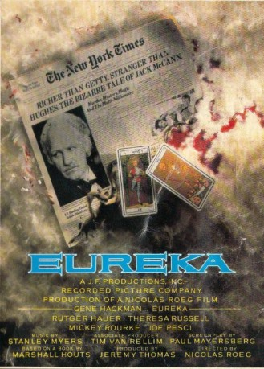
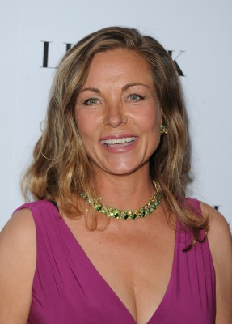
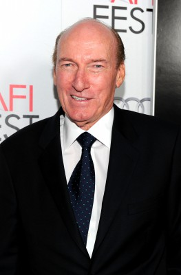
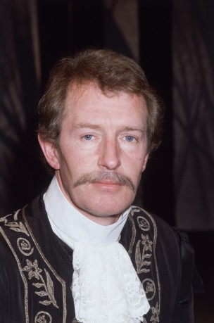
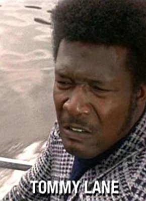

#3631 Eureka
 
 IMDB-Wertung: 6.0 / 10
IMDB-Wertung: 6.0 / 10  Metascore: 0
Metascore: 0 
Als Jack McCann (Gene Hackman) durch die Entdeckung einer Goldader zu unermeßlichem Reichtum kommt, scheinen sich all seine Träume zu erfüllen. Doch während er im Geld schwimmt, verläßt ihn zusehends sein Lebensmut. Nicht nur das familiäre Glück steht auf dem Spiel, auch Jack selbst gerät in tödliche Gefahr, als er von mafiaähnlichen Geschäftshaien auf`s Korn genommen wird.
Jahr: 1983
Dauer: 124 Minuten
FSK: 18
Land: England Studio: MGM Home EntertainmentTonspuren: DD5.1 - ,
Untertitel:
Auflösung: 1080p (1920x1080) Größe: 10199 MB
Genre: Thriller, Drama
Regisseur: Nicolas Roeg
Drehbuch: Dean Alioto
Soundtrack:
Darsteller:
 Gene Hackman als Jack McCann
Gene Hackman als Jack McCann-  Theresa Russell als Tracy
 Rutger Hauer als Claude Maillot Van Horn
Rutger Hauer als Claude Maillot Van Horn- Jane Lapotaire als Helen McCann
 Mickey Rourke als Aurelio D'Amato
Mickey Rourke als Aurelio D'Amato-  Ed Lauter als Charles Perkins
 Joe Pesci als Mayakofsky
Joe Pesci als Mayakofsky- Helena Kallianiotes als Frieda
-  Corin Redgrave als Worsley
 Joe Spinell als Pete
Joe Spinell als Pete Frank Pesce als Stefano
Frank Pesce als Stefano- James Faulkner als Roger
- Tim Van Rellim als Police Chief
 Ian Tracey als Joey
Ian Tracey als Joey- Cavan Kendall als Pierre de Valois
- Michael Scott Addis als Joe
- Norman Beaton als Byron Judson
- Emrys James als Judge
- Ann Thornton als Jane
- Emma Relph als Mary
- John Vine als Julian
- Ellis Dale als Jury Foreman
- Mico Blanco Group als Tonnelle Dancers
- Aklowa Master Drummers als Accompanied by
 Lloyd Berry als Olaf
Lloyd Berry als Olaf Tom Heaton als Man Blowing off Head
Tom Heaton als Man Blowing off Head Timothy Scott als Webb
Timothy Scott als Webb- Geri Dewson als Whore
- Annie Kidder als Rita
- Brad Sakiyama als Phil
- Sandra Friesen als Mother
- Raimund Stamm als Patron
- Suzette Collins als Esther
-  Tommy Lane als Miami Chauffeur
Datei: X:\1983\Eureka (1983, FSK18, 1920x1080).mkv seit 10.05.2016
Festplatte: HD 1980-1986
 Es gibt insgesamt 35 Filme in der Gruppe '1983'
Es gibt insgesamt 35 Filme in der Gruppe '1983'